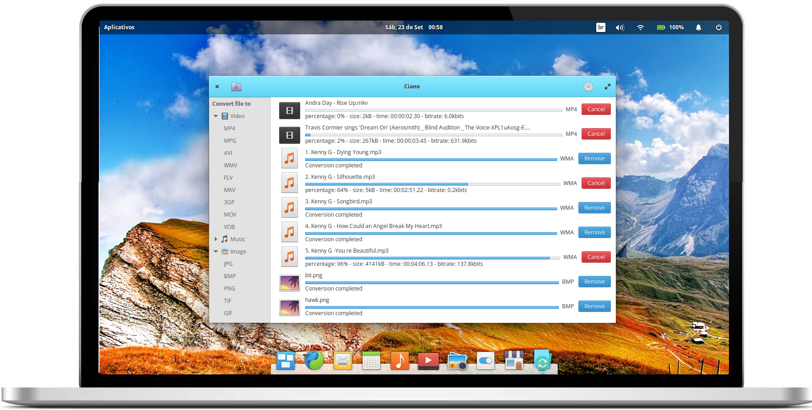
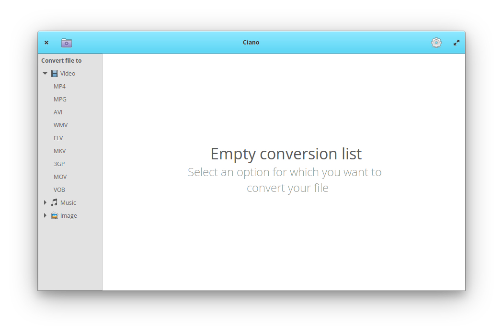

A simple multimedia file converter for elementary OS
The ciano is a multimedia converter for all the format you need.

Focused on simplicity, Ciano brings a new approach to using FFmpeg, without the need to write a single command line code.

"A complete solution. Impossible not to like."

Conversion
Convert and processes many media files with using FFmpeg with no knowledge.
Media Formats
Support for many codecs and containers like MPEG4, MPEG, FLV, AVI, OGG, GIF, VOB, MP3, WMA and many more..
Convert multiple files at once
Multiple file selection and conversion.